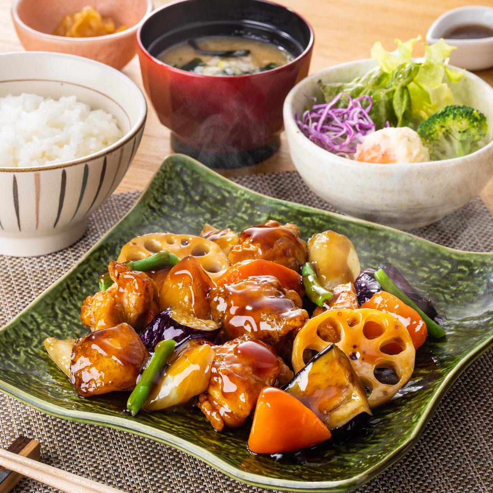

5位: 大戸屋ランチ定食
大戸屋を初めて行った時に食べた定食で、甘いかぼちゃコロッケがとても印象的でした。
4位: 大戸屋風チキン南蛮定食
チキン南蛮はもちろん美味しい上に、手作りのタルタルソースがとてもマッチしています。
3位: ピリ辛本格マーボードーフ定食
本格的に麻婆豆腐が辛く、食欲をかきたてご飯とよく合います。
2位: 鶏と野菜の黒酢あん定食
野菜がたくさんで、黒酢ソースが具材とよく絡んでおいしいです。
1位: こだわりソースのデミグラスチキンかつ定食
ここ最近で行ってよく食べている定食で、デミグラスソースがチキンカツとよく絡まってご飯が進む定食です。
終わりに
ぜひ皆さんも食べに行ってみてください～！
大戸屋のメニューが見たい方はこちらをクリック↓